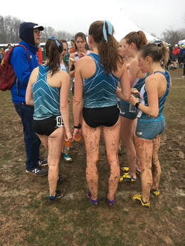
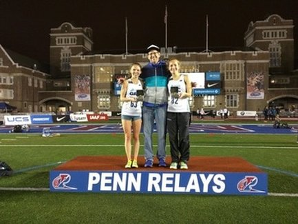

Georgetown Running Club
Coach Jerry Alexander

Jerry Alexander was a walk-on at Columbia who at least partially made up for his complete lack of talent with his dogged refusal to accept the reality that he had no business running in Division I. As a senior, Jerry was captain of the Lions Cross Country and Track squads. Jerry used his final year of track eligibility as a first year law student at Vanderbilt, where he broke the school record in the steeplechase. Jerry’s running “career” was cut short by injury, which prompted him to take up the noble art of coaching.
Because Jerry subscribes to the proposition that the coach gets full credit for all successes (and its corollary that the coach takes no blame for any failures), he is quick to take credit for the excellent results achieved by GRC men on his watch including the men's 8th place finish at the 2017 USATF Club Cross Country Championship and the 1st place in the 2018 Millrose Games Distance Medley Relay.
Outstanding individual achievements include (but are not limited to):
- Kieran O' Connor - 24th at the 2016 Olympic Trials and 2020 Trials Qualifier, Half Marathon Club Record (64:38)
- Dan Meeter - 2020 Trials Qualifier in Marathon Debut
- Lucas Stalnaker - 20th Place Finish in the 2019 USATF Outdoor Championship in the 10,000 Meters and Club Records at 3k (8:11), 8k (23:46), and 10k (28:57)
- Mike Franklin - 1st Place in the 2014 Penn Relays 10k
- Luke Meyer - 10 Mile Club Record (48:46)
- Daniel Trettel - 800m and 1500 Club Records (1:53.21 and 3:50.67)
- Paul Thistle - 3k Steeplechase Club Record (9:00.5)
- Carlos Jamieson - Road 5k Club Record (14:27)
- Ryan Witters - Mile Club Record (4:12.40)
- Jerry Greenlaw - 15k Club Record (47:57)
Jerry also takes credit for huge PRs run by, among others, Cecilia Barowski (2:02.14 800), Stephanie Reich (16:25 5000, 34:12 10,000, 1:15:45 half marathon), Teal Burrell (1:18:53 half marathon, 2:42:13 marathon), Lindsay O Brien (34:38 10k, 57:47 10 mile), Maura Linde (4:32 1500, 16:27 5000, 57:00 10 mile), Kerry Allen (28:46 8k, 58:57 10 mile, 1:17:45 half marathon), Hilary May (4:32 1500, 9:52 3000, 16:56 5000), Maura Carroll (17:27 5000, 35:45 10k, 59:56 10 mile, 1:19:46 half marathon, 2:49:54 marathon), Alex Morris (4:34.8 1500), Beth Young (1:17:18 half marathon, 2:49:30 marathon), Kristin Johnson (59:40 10 mile, 1:19:21 half marathon, 2:48:06 marathon), Taylor Tubbs (59:20 10 mile), Michelle Miller (35:36 10k, 59:20 10 mile, 1:19:41 half marathon), Frances Loeb (59:59 10 mile, 2:49:40 marathon), Elena Barham (9:45 3000, 16:51 5000, 1:21:14 half marathon), Catherine Campbell (4:49 1500, 10:07 3k, 17:08 5k), Kate Dart (1:20:19 half marathon, 2:53:18 marathon), Julie Tarallo (1:20:40 half marathon, 2:51:55 marathon), Natalie Patterson (2:55:17 marathon), Keely Eckberg (2:56:18 marathon), Margaret Johnston (1:20:01 half marathon, 2:58:42 marathon), Hallie Fox (2:56:44 marathon), Liz Reynolds (2:57:47 marathon), and Greta Stults (2:59:58 marathon).
Jerry also claims full credit for the transformation of the GRC’s women’s team into a burgeoning national power, which was amply demonstrated by the team’s outstanding 6th place finish in the 2016 USATF Club Cross Country Championships, and victory in the Distance Medley Relay at the 2017 Millrose Games.

- Frances Koons - 8th at the 2014 USATF Club Cross Country Championship, 8th place and 3rd American at the BUPA Great Edinburgh International Cross Country race in Scotland, 2015 Penn Relays 5k Champion, Club Records in track 10k (33:17) and road 8k (26:27) and 10k (34:14)
- Emily de La Bruyere - USATF Outdoor Championships Qualifier in the 3k Steeple chase (2017 and 2018), Club Records in 3k (9:28), 5k (16:15), and Steeplechase (9:59)
- Maura Linde - 20th at the 2017 USATF Clubs XC Championship and 2020 Olympic Trials Qualifier (2:44:26)
- Kerry Allen - 2020 Olympic Trials Qualifier (2:41:33)
- Teal Burrell - 72nd at the 2016 Olympic Trials Marathon
- Emily Potter - 102nd at the 2016 Olympic Trials Marathon
- Stephanie Reich - 2016 and 2017 Pen Relays 10k Champion, Clubs Records in 1500m (4:27.9), Road 5k (16:42), and 10 Mile (56:29)
- Frances Loeb - 2016 Penn Relays 5k Champion
- Alex Morris - Club Record in 800m (2:08.87)
- Susan Hendrick - Club Record in Road Mile (4:49)
- Drea Garvue - Club Record in the 15k (56:51)
Jerry also takes credit for huge PRs run by, among others, Cecilia Barowski (2:02.14 800), Stephanie Reich (16:25 5000, 34:12 10,000, 1:15:45 half marathon), Teal Burrell (1:18:53 half marathon, 2:42:13 marathon), Lindsay O’Brien (34:38 10k, 57:47 10 mile), Maura Linde (4:32 1500, 16:27 5000, 57:00 10 mile), Kerry Allen (28:46 8k, 58:57 10 mile, 1:17:45 half marathon), Hilary May (4:32 1500, 9:52 3000, 16:56 5000), Maura Carroll (17:27 5000, 35:45 10k, 59:56 10 mile, 1:19:46 half marathon, 2:49:54 marathon), Alex Morris (4:34.8 1500), Beth Young (1:17:18 half marathon, 2:49:30 marathon), Kristin Johnson (59:40 10 mile, 1:19:21 half marathon, 2:48:06 marathon), Taylor Tubbs (59:20 10 mile), Michelle Miller (35:36 10k, 59:20 10 mile, 1:19:41 half marathon), Frances Loeb (59:59 10 mile, 2:49:40 marathon), Elena Barham (9:45 3000, 16:51 5000, 1:21:14 half marathon), Catherine Campbell (4:49 1500, 10:07 3k, 17:08 5k), Kate Dart (1:20:19 half marathon, 2:53:18 marathon), Julie Tarallo (1:20:40 half marathon, 2:51:55 marathon), Natalie Patterson (2:55:17 marathon), Keely Eckberg (2:56:18 marathon), Margaret Johnston (1:20:01 half marathon, 2:58:42 marathon), Hallie Fox (2:56:44 marathon), Liz Reynolds (2:57:47 marathon), and Greta Stults (2:59:58 marathon).
Before he started working with post-graduate athletes, Jerry was a college coach in the DC area. When Jerry became Head Coach at the University of the District of Columbia in 1995, he inherited a program that was in complete disarray. In his two years at UDC, Jerry recruited and coached an athlete who qualified for Division II nationals in the 800 and 1500 in indoor and outdoor track, but his rebuilding project was cut short when budget problems led to the suspension of the athletic department. Jerry moved to American University where he was Assistant Coach for seven years, during which time he recruited and coached All-Americans Sean O’Brien, Sean Duffy, and Samia Akbar.
Jerry also coaches the Northern Virginia Running Club, a community-based team where he has worked with numerous standout women distance runners, including Jessica McGuire, who qualified for the 2020 Olympic Trials Marathon with a huge PR of 2:43:55, former LaSalle All-American Kathy Liever, and Martha Merz, who broke the 17 year-old American Record for 10,000 meters for runners over 45 years-old at the 2008 Penn Relays.
Jerry lives in Bethesda with his wife Michelle, who only runs when she’s chasing their son Jacob. When he’s not devising new and unique ways to whip his runners into shape, Jerry is a Trial Attorney with the United States Department of Justice.